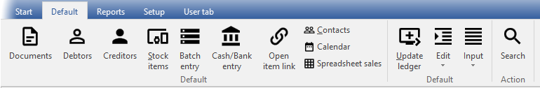

Default ribbon
The Default ribbon in osFinancials is used to manage various aspects of your business operations.
- Master files – It includes tools for managing master files such as debtors, creditors, contacts, stock items, appointments, and more.
- Transactions - You can also use this ribbon to process transactions, including sales documents (invoices, credit notes, quotes) and purchase documents (purchases, supplier returns, orders), as well as batches (journals).
- Periodic processing – Additionally, the Default ribbon provides tools for periodic processing, such as open item management, cash-book transactions, and repeating transactions or invoices.
- Search – The search function allows you to search for data in a central search and print transactions and documents as needed.

The Default ribbon offers fourteen (14) options to process and manage various aspects of the Set of Books:
- Documents - The Documents feature allows you to process and manage sales documents like invoices, credit notes, and quotes for your debtor (customer / client) accounts Similarly, you can process and manage purchase documents like purchases, supplier returns and orders for your creditor (supplier / vendor) accounts. The Documents option allows you to manage all these documents, and it automatically generates the required transactions and source documents. Additionally, you can print, reprint, and choose from various layout files for these documents.
- Debtors - The Debtors feature allows you to manage debtor (customer/ client) accounts. You can create new accounts, edit existing ones, delete or disable accounts as needed. This feature also provides filtering and search options to locate specific debtor (customer/ client) accounts. Within a debtor (customer/ client) account, you can make changes to the name, contact details, addresses, messages, accounting information, and payment terms. You can also manage various activities, such as Contacts, Appointments or tracking transactions, on the Documents, Transactions, Bank accounts, Backorders and Stock items tabs. Overall, the Debtors feature is designed to help you efficiently manage and track customer or client accounts, allowing you to provide better service and ensure accurate financial records.
- Creditors - The Creditors feature allows you to manage creditor (supplier / vendor) accounts. You can create new accounts, edit existing ones, delete or disable accounts as needed. This feature also provides filtering and search options to locate specific creditor (supplier / vendor) accounts. Within a creditor (supplier / vendor) account, you can make changes to the name, contact details, addresses, messages, accounting information, and payment terms. You can also manage various activities, such as Contacts, Appointments or tracking transactions, on the Documents, Transactions, Bank accounts and Stock items tabs. The overall purpose of the Creditors feature is to enable you to efficiently manage and track creditor (supplier / vendor) accounts, which in turn allows you to provide better service and ensure accurate financial records.
- Stock items - The Stock items feature allows you to manage your inventory items or products. You have the ability to create new stock items or products, edit existing ones, delete or disable items as needed. The feature provides filtering and search options to help you locate specific items. Within each item, you can make changes to the stock code, description, extra description, quantities, reorder levels and more. You can also manage various settings on the Ledger tab and various activities on the Document groups, Transactions, Image, Multi-group, and Backorders tabs. By using the Stock Items feature, you can efficiently manage and track your inventory, providing better service and ensuring accurate financial records.
- Batch entry - Batch entry is a process of entering multiple transactions into batches or journals, and then processing those transactions in the selected batch or journal. This feature enables you to import multiple transactions at once from a spreadsheet or an exported file, instead of manually entering and processing each transaction. This helps to streamline financial and accounting processes, especially for businesses or organizations with high volumes of transactions. Additionally, you can print a posted batch type report for selected batches (journals).
- Cash / Bank entry - Reconcile transactions is processed (entered form bank statements) in separate payment batches and receipt batches (linked to a bank account). (If the "Default bank reconciliation" option is selected).
|
|
Bank import plugin - Bank Reconciliations Plugin Manual - BankImport Plugin Manual - Shop - The Bank import plugin licence is included in the osFinancials Business class subscription. The Bank import plugin is a tool that can be added to the software to import bank transactions and save users time on data entry. Bank statements can be imported into a single cash-book journal (combined payments journal and receipts journal). The imported transactions can be easily linked to debtor, creditor, or other accounts, and payments can be linked to specific invoices with just a few clicks. To activate this feature, go to Setup ribbon, select Setup → System Parameters.. |

- Open item link - Process and edit links for open item accounts, adjust payment dates, and process receipts or payments.
- Contacts - Create and edit contact persons and print a contact list.
- Calendar - The calendar / planner allows you to manage (schedule, add, edit, delete) events (appointments, debtor appointments, creditor appointments, repeating invoices and to generate quotes / invoices for events). It also allows you to (add / edit / delete) contacts and tasks.
- Spreadsheet sales - Process sales in a spreadsheet
- Update ledger - Update (post) sales documents (i.e. invoices and credit notes) and purchase documents (i.e. purchases and supplier returns) and batches to the ledger.
- Edit - Access the following four (4) options:
- Backorders - Add, edit and delete backorders for stock items.
- Repeating transactions - Enter / edit transactions in batches of a recurring nature.
- Repeating invoices - Generate and process invoices of an recurring nature.
- Documents (delete) - Delete sales documents (i.e. invoices, credit notes and quotes) and purchase documents (i.e. purchases, supplier returns and orders).
- Input - Access the following ten (10) options:
- Confirm - Confirm and convert quotes to invoices and orders to purchases.
- Adjust stock - Access the Edit Stock screen. You may edit stock items, adjust quantities, prices, etc.
- Invoices - Invoices are created for debtors (customers / clients). This will generate a source document which can be printed. The Invoice, can be edited before it is posted (updated) to the ledger.
When an Invoice is posted (updated) to the ledger, the transactions in the Sales journal will automatically be generated.
- Quotes - You may need to produce a quote for your debtors (customers / clients). When the quote is accepted, you may confirm the quote (convert the Quote to an Invoice).
- Credit notes - Credit notes are created for debtors (customers / clients) to correct a transaction or an exiting Invoice or to cancel the Invoice. This will generate a source document which can be printed. The Credit notes, can be edited before it is posted (updated) to the ledger.
When a Credit note is posted (updated) to the ledger, the transactions in the Sales journal (or Sales returns journal) will automatically be generated.
- Purchases - Purchase documents are created creditors (suppliers). This will generate a source document which can be printed. The Purchase document, can be edited before it is posted (updated) to the ledger.
When a purchase document is posted (updated) to the ledger, the transactions in the Purchase journal will automatically be generated.
- Supplier returns - Supplier returns are created creditors (suppliers) to correct a transaction or an exiting Purchase or to cancel the Purchase. This will generate a source document which can be printed. The Supplier returns, can be edited before it is posted (updated) to the ledger.
When a Supplier return is posted (updated) to the ledger, the transactions in the Purchase journal (or Purchase returns journal) will automatically be generated.
- Orders - You may need to place an order with any of your creditors (suppliers). When the goods are received or services are provided, you may confirm the order against the actual goods received and the original order. You will do this by converting the Order to a Purchase document.
- POS Invoice - If the standard Point-of-Sales is configured, for the Set of Books, you may run and manage a point-of-sales shift and process point-of-sale invoices.
- Checking for unposted items - This will list any batches and documents with transactions that have not yet been posted (updated) to the ledger.
- Search - Launch the central search (Investigator) to search and filter for data in the Set of Books.